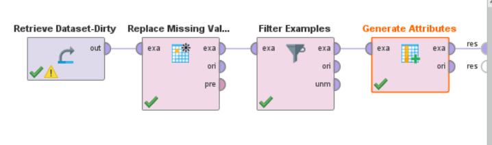
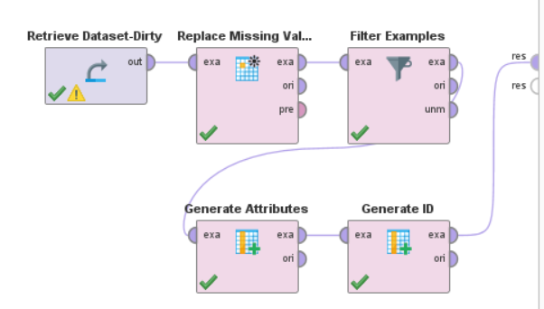
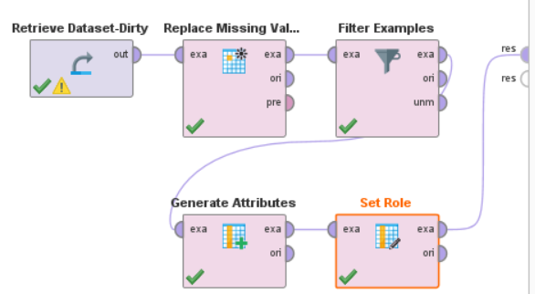
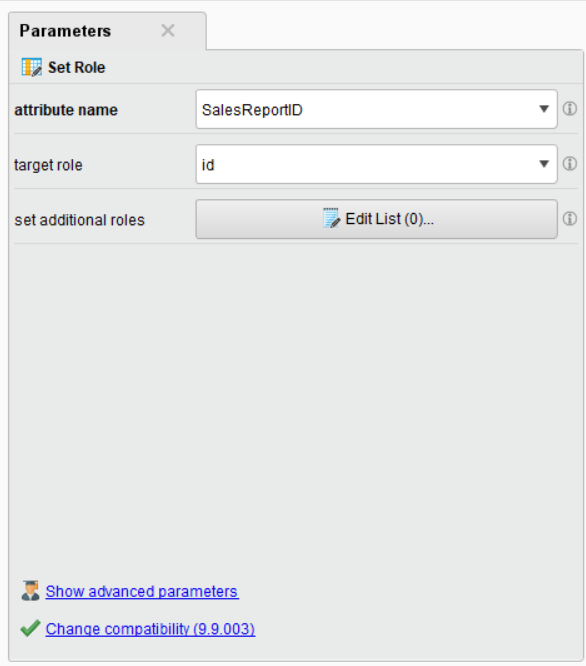

Attribute Operators
Dalam melakukan data processing, kita juga bisa melakukan operasi pada attribute. Untuk session ini, kita akan mempelajari bagaimana cara untuk generate attribute baru, dan menentukan role dari attribute tersebut.
Contoh 1: Generate Attribute
Misalnya, kita ingin membuat attribute baru yang berisi kuartal dari “ReportDate”. Dengan tujuan supaya kita dapat menganalisa data berdasarkan kuartal.
Untuk melakukan itu, kita bisa menggunakan operator “Generate Attributes”. Di panel Operators, cari operator tersebut, lalu tarik ke dalam panel Process. Jangan lupa hubungkan node tersebut ke dalam proses yang sudah kita buat sebelumnya. Lalu hubungkan operator tersebut ke dalam node “res”.
{kind=link}
Kemudian, kita akan Edit List, lalu buatlah attribute baru dengan nama “ReportQuarter”, dan untuk functionnya gunakan function berikut:
ceil((date_get([ReportDate], DATE_UNIT_MONTH) + 1) / 3)
Note
date_get([ReportDate], DATE_UNIT_MONTH) + 1 adalah untuk mendapatkan bulan dari “ReportDate” (ditambah 1 karena bulan Januari adalah bulan ke-0). Lalu, kita bagi dengan 3 untuk mendapatkan kuartalnya.
Contoh 2: Generate ID
Suatu data memerlukan suatu ID sebagai identitas dari data tersebut. Terdapat 2 cara untuk menyelesaikan masalah ini, yaitu dengan generate ID melalui operator “Generate ID”, atau menjadikan suatu attribute sebagai key / id.
Pada cara pertama, bisa menggunakan operator “Generate ID”. Di panel Operators, cari operator tersebut, lalu tarik ke dalam panel Process. Jangan lupa hubungkan node tersebut ke dalam proses yang sudah kita buat sebelumnya. Lalu hubungkan operator tersebut ke dalam node “res”.
{kind=link}
Sedangkan, di cara kedua, kita bisa memanfaatkan attribute yang sudah ada sebagai key / id. Misalnya, kita ingin menggunakan “SalesReportID” sebagai key / id.
Kita bisa menggunakan operator “Set Role”. Di panel Operators, cari operator tersebut, lalu tarik ke dalam panel Process. Jangan lupa hubungkan node tersebut ke dalam proses yang sudah kita buat sebelumnya. Lalu hubungkan operator tersebut ke dalam node “res”.
{kind=link}
Kemudian, pilih node “Set Role” dan ubah Parameter Name menjadi “SalesReportID”, dan target role menjadi “id”.
{kind=link}
Setelah itu, klik tombol “Run” untuk menjalankan proses ini.